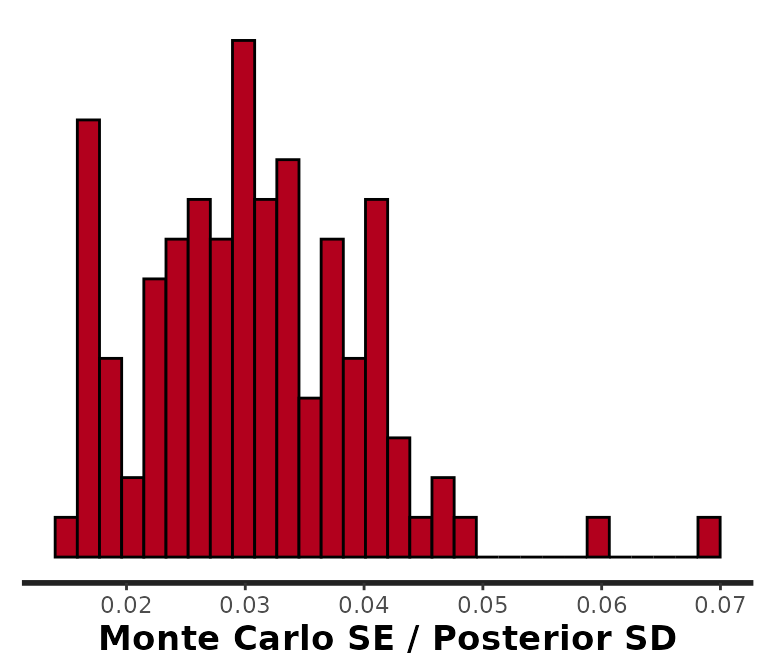
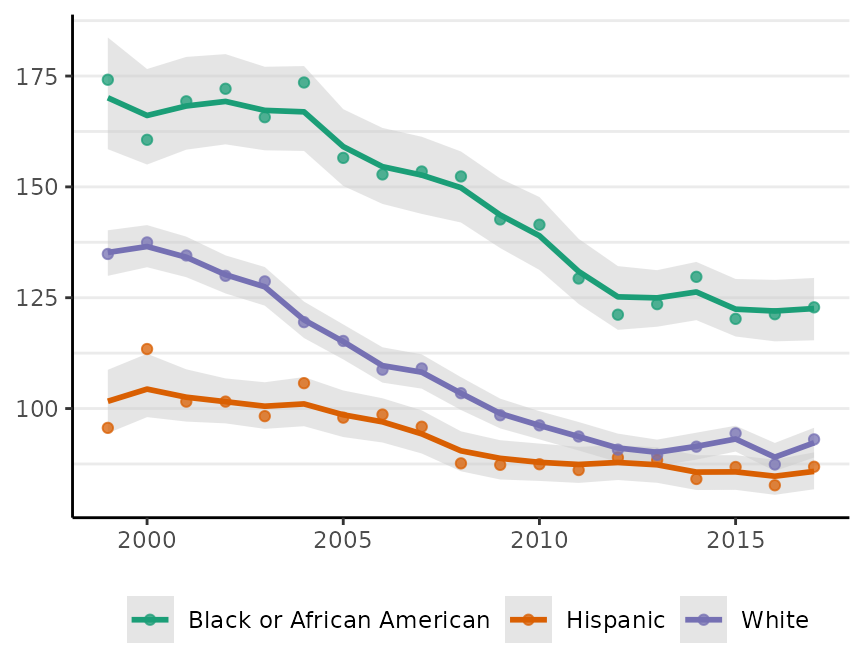
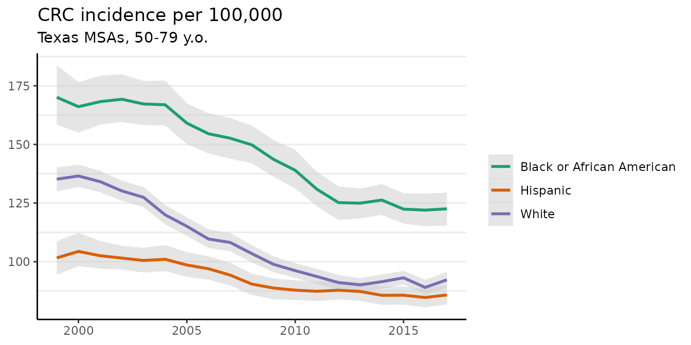
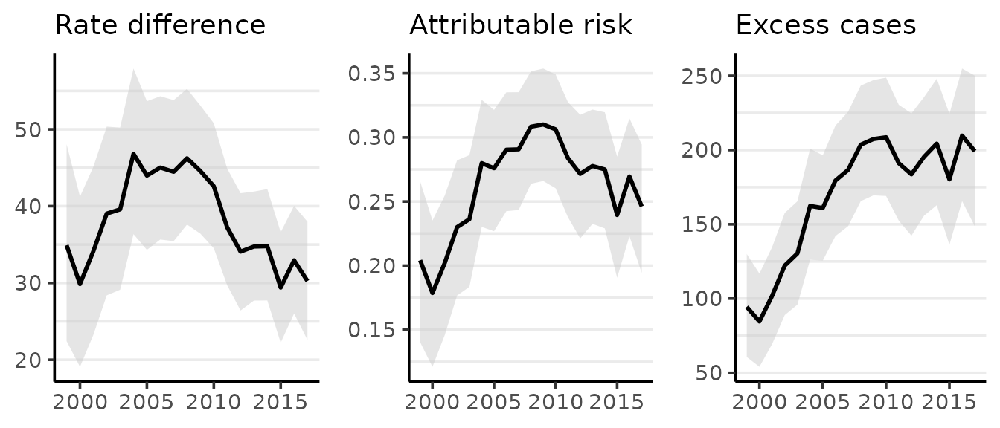

This vignette demonstrates basic usage of surveil for public health surveillance. surveil leverages the principles of Bayesian inference (Jaynes 2003; MacKay 2003) to infer population risk of disease or death given time series data consisting of case counts and population at risk. Models were built using the Stan modeling language, but users only need to be familiar with the R language.
The package also contains special methods for age-standardization, printing and plotting model results, and for measuring and visualizing health inequalities.
## packages required for the analysis
library(surveil)
library(dplyr)
library(ggplot2)
theme_set(theme_classic())
## for the vignette
library(knitr)Surveillance data minimally contain case counts, reliable population at risk estimates, and a discrete time period variable. They also may include one or more grouping variables, such as race-ethnicity.
This vignette analyzes age-specific (ages 50-79) colorectal cancer incidence data by race-ethnicity, year, and Texas MSA, obtained through CDC Wonder. The race-ethnicity grouping includes (non-Hispanic) Black, (non-Hispanic) White, and Hispanic, and the MSAs include those centered on the cities of Austin, Dallas, Houston, and San Antonio.
head(msa) %>%
kable(booktabs = TRUE,
caption = "Glimpse of colorectal cancer incidence data (CDC Wonder)") | Year | Race | MSA | Count | Population |
|---|---|---|---|---|
| 1999 | Black or African American | Austin-Round Rock, TX | 28 | 14421 |
| 2000 | Black or African American | Austin-Round Rock, TX | 16 | 15215 |
| 2001 | Black or African American | Austin-Round Rock, TX | 22 | 16000 |
| 2002 | Black or African American | Austin-Round Rock, TX | 24 | 16694 |
| 2003 | Black or African American | Austin-Round Rock, TX | 34 | 17513 |
| 2004 | Black or African American | Austin-Round Rock, TX | 26 | 18429 |
surveil’s model fitting function, stan_rw, requires that the user provide a data.frame with specific column names. There must be one column named Cases containing case counts, and another column named Population, containing the sizes of the populations at risk. The user also must provide the name of the column containing the time period, and, optionally, a grouping factor. For the MSA data printed above, the grouping column is Race and the time column is Year.
We will first analyze aggregated CRC cases across Texas’s top four MSAs. The msa data from CDC Wonder already has the necessary format (column names and contents), but the data are dis-aggregated by MSA. So for this analysis, we first group the data by year and race, and then combine cases across MSAs.
The following code chunk aggregates the data using the dplyr package:
tx.msa <- msa %>%
group_by(Year, Race) %>%
summarise(Count = sum(Count),
Population = sum(Population))The following code provides a glimpse of the aggregated data (Table 2):
head(tx.msa) %>%
kable(booktabs = TRUE,
caption = "Glimpse of aggregated Texas metropolitan CRC cases, by race and year")| Year | Race | Count | Population |
|---|---|---|---|
| 1999 | Black or African American | 471 | 270430 |
| 1999 | Hispanic | 361 | 377471 |
| 1999 | White | 2231 | 1654251 |
| 2000 | Black or African American | 455 | 283280 |
| 2000 | Hispanic | 460 | 405562 |
| 2000 | White | 2343 | 1704425 |
The base surveil model specification is specified as follows. The Poisson model is used as the likelihood: the probability of observing a given number of cases, \(y_t\), conditional on unknown level of risk, \(e^{\phi_t}\), and known population at risk, \(p_t\): \[y_t \sim \text{Pois}(p_t \cdot e^{\phi_t})\] where \(t\) indexes the time period.
Next, we build a model for the log-rates, \({\phi_t}\). The first-difference prior states that our expectation for the log-rate at any time is its previous value, and we assign a Gaussian probability distribution to deviations from the previous value (Clayton 1996). This is also known as the random-walk prior: \[\phi_t \sim \text{Gau}(\phi_{t-1}, \tau^2)\] This places higher probability on a smooth trend through time, specifically implying that underlying disease risk tends to have less variation than crude incidence.
The log-risk for time \(t=1\) has no previous value to anchor its expectation; thus, we assign a prior probability distribution directly to \(\phi_1\). For this prior, surveil uses a Gaussian distribution. The scale parameter, \(\tau\), also requires a prior distribution, and again surveil uses a Gaussian model.
For multiple time series, surveil allows users to add a correlation structure to the model. This allows our inferences about each population to be mutually informed by inferences about all other observed populations.
The log-rates for \(k\) populations, \(\boldsymbol \phi_t\), are assigned a multivariate Gaussian model (Brandt and Williams 2007): \[\boldsymbol \phi_t \sim \text{Gau}(\boldsymbol \phi_{t-1}, \boldsymbol \Sigma),\] where \(\boldsymbol \Sigma\) is a \(k \times k\) covariance matrix.
The covariance matrix can be decomposed into a diagonal matrix containing scale parameters for each variable, \(\boldsymbol \Delta = diag(\tau_1,\dots \tau_k)\), and a symmetric correlation matrix, \(\boldsymbol \Omega\) (Stan Development Team 2021): \[\boldsymbol \Sigma = \boldsymbol \Delta \boldsymbol \Omega \boldsymbol \Delta\] When the correlation structure is added to the model, then a prior distribution is also required for the correlation matrix. surveil uses the LKJ model, which has a single shape parameter, \(\eta\) (Stan Development Team 2021). If \(\eta=1\), the LKJ model will place uniform prior probability on any \(k \times k\) correlation matrix; as \(\eta\) increases from one, it expresses ever greater skepticism towards large correlations. When \(\eta <1\), the LKJ model becomes ‘concave’—expressing skepticism towards correlations of zero.
The time series model is fit by passing surveillance data to the stan_rw function. Here, Year and Race indicate the appropriate time and grouping columns in the tx.msa data frame.
fit <- stan_rw(tx.msa, time = Year, group = Race)
#> Distribution: normal
#> Distribution: normal
#> [1] "Setting normal prior(s) for eta_1: "
#> location scale
#> -5 10
#> [1] "\nSetting half-normal prior for sigma: "
#> location scale
#> 0 1
#>
#> SAMPLING FOR MODEL 'poissonRW' NOW (CHAIN 1).
#> Chain 1:
#> Chain 1: Gradient evaluation took 4.6e-05 seconds
#> Chain 1: 1000 transitions using 10 leapfrog steps per transition would take 0.46 seconds.
#> Chain 1: Adjust your expectations accordingly!
#> Chain 1:
#> Chain 1:
#> Chain 1: Iteration: 1 / 3000 [ 0%] (Warmup)
#> Chain 1: Iteration: 1500 / 3000 [ 50%] (Warmup)
#> Chain 1: Iteration: 1501 / 3000 [ 50%] (Sampling)
#> Chain 1: Iteration: 3000 / 3000 [100%] (Sampling)
#> Chain 1:
#> Chain 1: Elapsed Time: 0.364382 seconds (Warm-up)
#> Chain 1: 0.357079 seconds (Sampling)
#> Chain 1: 0.721461 seconds (Total)
#> Chain 1:
#>
#> SAMPLING FOR MODEL 'poissonRW' NOW (CHAIN 2).
#> Chain 2:
#> Chain 2: Gradient evaluation took 1.2e-05 seconds
#> Chain 2: 1000 transitions using 10 leapfrog steps per transition would take 0.12 seconds.
#> Chain 2: Adjust your expectations accordingly!
#> Chain 2:
#> Chain 2:
#> Chain 2: Iteration: 1 / 3000 [ 0%] (Warmup)
#> Chain 2: Iteration: 1500 / 3000 [ 50%] (Warmup)
#> Chain 2: Iteration: 1501 / 3000 [ 50%] (Sampling)
#> Chain 2: Iteration: 3000 / 3000 [100%] (Sampling)
#> Chain 2:
#> Chain 2: Elapsed Time: 0.368745 seconds (Warm-up)
#> Chain 2: 0.357346 seconds (Sampling)
#> Chain 2: 0.726091 seconds (Total)
#> Chain 2:
#>
#> SAMPLING FOR MODEL 'poissonRW' NOW (CHAIN 3).
#> Chain 3:
#> Chain 3: Gradient evaluation took 1.2e-05 seconds
#> Chain 3: 1000 transitions using 10 leapfrog steps per transition would take 0.12 seconds.
#> Chain 3: Adjust your expectations accordingly!
#> Chain 3:
#> Chain 3:
#> Chain 3: Iteration: 1 / 3000 [ 0%] (Warmup)
#> Chain 3: Iteration: 1500 / 3000 [ 50%] (Warmup)
#> Chain 3: Iteration: 1501 / 3000 [ 50%] (Sampling)
#> Chain 3: Iteration: 3000 / 3000 [100%] (Sampling)
#> Chain 3:
#> Chain 3: Elapsed Time: 0.364684 seconds (Warm-up)
#> Chain 3: 0.357253 seconds (Sampling)
#> Chain 3: 0.721937 seconds (Total)
#> Chain 3:
#>
#> SAMPLING FOR MODEL 'poissonRW' NOW (CHAIN 4).
#> Chain 4:
#> Chain 4: Gradient evaluation took 1.1e-05 seconds
#> Chain 4: 1000 transitions using 10 leapfrog steps per transition would take 0.11 seconds.
#> Chain 4: Adjust your expectations accordingly!
#> Chain 4:
#> Chain 4:
#> Chain 4: Iteration: 1 / 3000 [ 0%] (Warmup)
#> Chain 4: Iteration: 1500 / 3000 [ 50%] (Warmup)
#> Chain 4: Iteration: 1501 / 3000 [ 50%] (Sampling)
#> Chain 4: Iteration: 3000 / 3000 [100%] (Sampling)
#> Chain 4:
#> Chain 4: Elapsed Time: 0.38598 seconds (Warm-up)
#> Chain 4: 0.353829 seconds (Sampling)
#> Chain 4: 0.739809 seconds (Total)
#> Chain 4:If we wanted to add a correlation structure to the model, we would add cor = TRUE (as opposed to the default, cor = FALSE). To speed things up, we could take advantage of parallel processing using the cores argument (e.g., by adding cores = 4 to run on 4 cores simultaneously). Note also that it is important to read and address any warning messages related to Stan’s MCMC diagnostics. In this case, the sampling finished without any warnings, so we can proceed with our analysis.
If we call plot on a surveil model, we get a ggplot object:
plot(fit, scale = 100e3)
#> Plotted rates are per 100,000Instead of viewing the default plot, we can first store the `ggplot in our working environment and then modify the figure as we please:
fig <- plot(fit, scale = 100e3)
#> Plotted rates are per 100,000
fig +
scale_color_brewer(breaks = c("Black or African American", "White", "Hispanic"),
labels = c("Black", "White", "Hispanic"),
name = NULL,
type = 'qual')
#> Scale for 'colour' is already present. Adding another scale for 'colour',
#> which will replace the existing scale.The plot method has a style argument that controls how the probability distribution is represented. The default, style = "mean_qi", shows the mean of the posterior distribution of the risk at each time period with a shaded 95% credible interval (as above). The alternative, style = "lines", plots MCMC samples from the joint probability distribution across all time periods:
plot(fit, scale = 100e3, style = "lines")
#> Plotted rates are per 100,000
By default, M = 250 samples are plotted. The style option is available for all of the surveil plot methods.
surveil also provides a number of functions and methods for measuring health inequalities.
A selection of complementary pairwise inequality measures can be calculated using the group_diff function. The function requires a fitted surveil model and character strings corresponding, respectively, to the target population (indicating which group is the target of our inference, typically the overburdened or disadvantaged group), and the reference population. It returns probability distributions and summary statements for the following quantities, where target and reference indicate disease risk for the respective populations:
Notice that the PAR is simply the rate difference expressed as a fraction of total risk; it indicates the fraction of risk in the target population that would have been removed had the target rate equaled the reference rate (Menvielle, Kulhánová, and Machenbach 2019).
To calculate all of these measures for two groups in our data, we call group_diff on our fitted model:
gd <- group_diff(fit, target = "Black or African American", reference = "White")
print(gd, scale = 100e3)
#> Summary of Pairwise Inequality
#> Target group: Black or African American
#> Reference group: White
#> Time periods observed: 19
#> Rate scale: per 100,000
#> Cumulative excess cases (EC): 3,206 [2986, 3440]
#> Cumulative EC as a fraction of group risk (PAR): 0.27 [0.25, 0.28]
#> time Rate RD PAR RR EC
#> 1999 170 35 0.20 1.3 95
#> 2000 166 30 0.18 1.2 85
#> 2001 168 34 0.20 1.3 102
#> 2002 169 39 0.23 1.3 122
#> 2003 167 40 0.24 1.3 131
#> 2004 167 47 0.28 1.4 162
#> 2005 159 44 0.28 1.4 161
#> 2006 155 45 0.29 1.4 179
#> 2007 153 44 0.29 1.4 186
#> 2008 150 46 0.31 1.4 203
#> 2009 144 45 0.31 1.5 208
#> 2010 139 43 0.31 1.4 209
#> 2011 131 37 0.28 1.4 191
#> 2012 125 34 0.27 1.4 184
#> 2013 125 35 0.28 1.4 196
#> 2014 126 35 0.27 1.4 204
#> 2015 122 29 0.24 1.3 180
#> 2016 122 33 0.27 1.4 209
#> 2017 122 30 0.25 1.3 199All of the surveil plotting and printing methods provide an option to scale rates by a custom value. By setting scale = 100e3 (100,000), the RD is printed as cases per 100,000. Note that none of the other inequality measures (PAR, RR, EC) are ever impacted by this choice.
The plot method for surveil_diff produces one time series ggplot each for RD, PAR, and EC. The means of the probability distributions for each measure are plotted as lines, while the shading indicates a 95% credible interval:
plot(gd, scale = 100e3)
#> Rate differences (RD) are per 100,000 at risk
If we wanted to replace the plot of the PAR with one of the RR, we would set the PAR option to FALSE:
plot(gd, scale = 100e3, PAR = FALSE, style = "lines")
#> Rate differences (RD) are per 100,000 at risk
Pairwise measures are important, but they cannot provide a summary of inequality across multiple socially situated groups. Theil’s T is an entropy-based inequality index with many favorable qualities, including that it naturally accommodates complex grouping structures (Theil 1972; Conceição and Galbraith 2000; Conceição and Ferreira 2000).
Theil’s T measures the extent to which certain populations are overburdened by disease, meaning precisely that the proportion of cases accounted for by a particular group, \(\omega_j\), is higher than the proportion of the population constituted by that same group, \(\eta_j\). With \(k\) groups, Theil’s index is \[T = \sum_{j=1}^k \omega_j \big[ log(\omega_j / \eta_j) \big].\] This is zero when case shares equal population shares and it increases monotonically as the two diverge for any group. Theil’s T is thus a weighted mean of log-ratios of case shares to population shares, where each log-ratio (which we may describe as a raw inequality score) is weighted by its share of total cases.
Theil’s T can be computed from a fitted surveil model, the only requirement is that the model includes multiple groups (through the group argument):
Ts <- theil(fit)
print(Ts)
#> Summary of Theil's Inequality Index
#> Groups:
#> Time periods observed: 19
#> Theil's T (times 100) with 95% credible intervals
#> time Theil .lower .upper
#> 1999 0.942 0.639 1.304
#> 2000 0.797 0.525 1.089
#> 2001 0.903 0.626 1.203
#> 2002 0.982 0.690 1.307
#> 2003 0.996 0.710 1.315
#> 2004 1.071 0.755 1.445
#> 2005 1.000 0.700 1.351
#> 2006 1.044 0.716 1.402
#> 2007 1.100 0.780 1.460
#> 2008 1.242 0.897 1.659
#> 2009 1.201 0.849 1.597
#> 2010 1.132 0.798 1.533
#> 2011 0.912 0.601 1.270
#> 2012 0.768 0.480 1.091
#> 2013 0.806 0.532 1.123
#> 2014 0.858 0.577 1.200
#> 2015 0.681 0.429 0.966
#> 2016 0.803 0.530 1.118
#> 2017 0.715 0.435 1.047The probability distribution for Theil’s T can be summarized visualy using the "lines" style plot or by plotting estimates with shaded 95% credible intervals:
plot(Ts)
While the minimum of Theil’s index is always zero, the maximum value varies with the structure of the population under observation. The index is useful for comparisons such as monitoring change over time, and should generally not be used as a indication of the absolute level of inequality.
The index also has interesting extensions; for example, given disease data for a nested population structure—such as racial-ethnic groups within states—Theil’s index can provide a measure of geographic inequality across states (between-state inequality), and social inequality within states (within-state inequality). For details, see ?theil.
Brandt, P, and JT Williams. 2007. Multiple Time Series Models. Sage.
Clayton, DG. 1996. “Generalized Linear Mixed Models.” In Markov Chain Monte Carlo in Practice: Interdisciplinary Statistics, edited by WR Gilks, S Richardson, and DJ Spiegelhalter, 275–302. CRC Press.
Conceição, Pedro, and Pedro Ferreira. 2000. “The Young Person’s Guide to the Theil Index: Suggesting Intuitive Interpretations and Exploring Analytical Applications.” University of Texas Inequality Project (UTIP). https://utip.gov.utexas.edu/papers.html.
Conceição, Pedro, and James K. Galbraith. 2000. “Constructing Long and Dense Time Series of Inequality Using the Theil Index.” Eastern Economic Journal 26 (1): 61–74.
Jaynes, Edwin T. 2003. Probability Theory: The Logic of Science. Cambridge University Press.
MacKay, David M. 2003. Information Theory, Inference, and Learning Algorithms. Cambridge University Press.
Menvielle, Gwenn, Kulhánová, and Johan P. Machenbach. 2019. “Assessing the Impact of a Public Health Intervention to Reduce Social Inequalities in Cancer.” In Reducing Social Inequalities in Cancer: Evidence and Priorities for Research, edited by Salvatore Vaccarella, Joannie Lortet-Tieulent, Rodolfo Saracci, David I. Conway, Kurt Straif, and Christopher P. Wild, 185–92. Geneva, Switzerland: WHO Press.
Stan Development Team. 2021. Stan Modeling Language Users Guide and Reference Manual, 2.28. https://mc-stan.org.
Theil, Henry. 1972. Statistical Decomposition Analysis. Amsterdam, The Netherlands; London, UK: North-Holland Publishing Company.